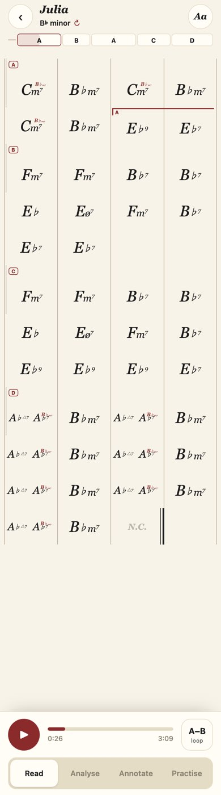
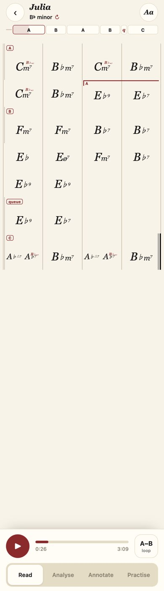

Clique une section ou une mesure pour l'écouter.
| B (mesures 19–28) | « C » (45–56) | ressemblance | symbole |
|---|---|---|---|
| 19F-7 | 45F-7 | 1.00 | c |
| 20F-7 | 46F-7 | 1.00 | |
| 21B♭7 | 47B♭7 | 1.00 | d |
| 22B♭7 | 48B♭7 | 1.00 | |
| 23E♭ | 49E♭ | 1.00 | a |
| 24Eø7 | 50Eø7 | 1.00 | |
| 25F-7 | 51F-7 | 1.00 | d |
| 26B♭7 | 52B♭7 | 1.00 | |
| 27E♭7 | 53E♭9 | 1.00 | a |
| 28E♭7 | 54E♭9 | 0.97 | |
| — | 55E♭9 | queue | a |
| — | 56E♭7 | queue |
cdada, le « C » cdadaa : un symbole de plus. L'outil ne donnait la même lettre qu'à des mots identiques (et le prime A′ qu'à longueur égale) : un mot qui en prolonge un autre prenait une lettre neuve. Ce n'était ni un seuil ni une frontière mal placée.| mesure | ressemblance avec 2 mesures avant | avec 4 mesures avant | case de la rangée |
|---|---|---|---|
| 57A♭Δ7 | — | — | 1 |
| 58B♭-7 | — | — | 2 |
| 59A♭Δ7 | 1.00 | — | 3 |
| 60B♭-7 | 0.94 | — | 4 |
| 61A♭Δ7 B♭-7 | 1.00 | 1.00 | 1 |
| 62B♭-7 | 0.92 | 0.99 | 2 |
| 63A♭Δ7 B♭-7 | 0.99 | 0.98 | 3 |
| 64B♭-7 | 0.99 | 0.95 | 4 |
| 65A♭Δ7 | 0.99 | 1.00 | 1 |
| 66B♭-7 | 1.00 | 1.00 | 2 |
| 67A♭7 F-7 | 0.94 | 0.97 | 3 |
| 68B♭-7 | 1.00 | 1.00 | 4 |
| 69A♭Δ7 | 0.97 | 0.99 | 1 |
| 70B♭-7 | 0.99 | 0.98 | 2 |
| 71N.C. | 0.61 | 0.70 | 3 |
soudure.sections_pour_chart) écrivait chaque passage en entier sans jamais regarder sa boucle interne → 15 mesures sur 4 rangées. Maintenant : une rangée de 4 (2 × la cellule), allumée à chaque tour, le dernier tour incomplet compris (mesures 69–71 → cases 1–3).

(a) comme aujourd'hui, rien (b) ×N à côté de la lettre (c) barres de reprise C C ×3¾ C | A♭Δ7 | B♭-7 | A♭Δ7 | B♭-7 | | A♭Δ7 | B♭-7 | A♭Δ7 | B♭-7 | ||: A♭Δ7 | B♭-7 | A♭Δ7 | B♭-7 :|| ×4
Et la rangée : 4 mesures (2 × la cellule, choisi) ou la cellule seule de 2 ?
Effet de bord (rapport d'or) : San Francisco Street, A′ (13 mesures = D Δ7 | GΔ7 | E-7 | A7sus4 ×3¼) passe aussi sur une ligne. Rien d'autre ne bouge ; replier aussi les sections de 8 mesures (4 × 2) toucherait 8 morceaux (Let It Be A, She Will Be Loved A, The Walk A…) — non fait, à toi de dire.